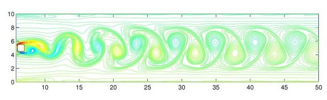
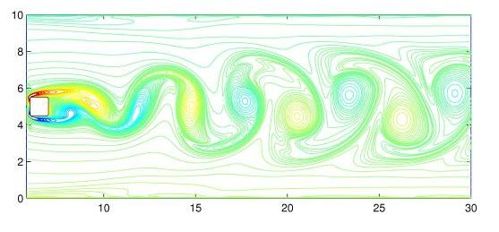
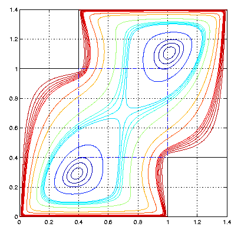
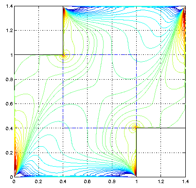
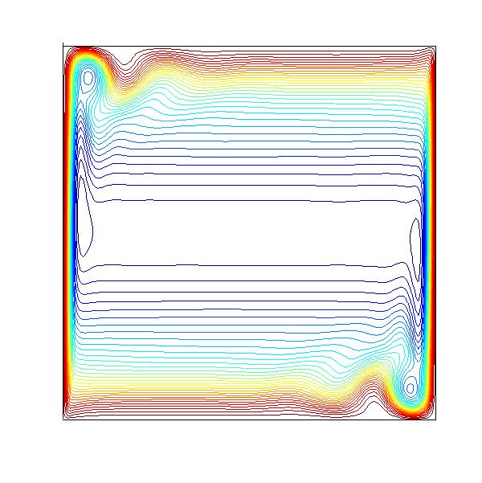

Computational Fluid Dynamics
Wavelet basedlocal spectral element method (Method of finite subdomains)
The widespead availablity of parallelcomputers and their potential for the numerical solution of difficult-to-solve partialdifferential equations have led to a large amount of research in domaindecomposition methods, especially in CFD, where many applications involvecomplex geometries. The wavelet essentially-non-dispersive (WEND) scheme isconstructed by using the Discrete Singular Convolution (DSC) algorithm, whichrequires as little as 2.2 point per wavelength (PPW) for flowsimulations. For complex geometry, a wavelet based new domain decomposition method is proposed usingpseudo-overlaping grids. We applied it to flows past a cylinder with 5subdomains:

A close-up view gives fine flow details:

An other example we studied is the steadyflow of a staggered lid-driven cavity:


Fig1. The streamline forRe=100 Fig2: The vorticity for Re=100
Here 5 subdomains are used forthe simulation.
Thelocal spectral WEND scheme is also used for computing the fluid flowpatterns in a buoyancy driven cavity for a very high Rayleigh number (Ra=10^8).Simulation at this parameter is very close to the transition of naturalconvection into a turbulent flow, which can be construed as a very tough testfor any numerical scheme. The conventional local methods have reportedlyproduced spurious oscillations. DSC spatial discretization could quiteaccurately simulate the fluid flow features devoid of all the negative effects.

Streamlines by DSC at Ra=10^8
References:
D.C. Wan, B.S.V. Patnaik and G.W. Wei, A new benchmark quality solution for the buoyancydriven cavity by discrete singular convolution, Numer. Heat Transfer B -Fundamentals , 40 , 199-228 (2001).
D.C. Wan, B.S.V. Patnaik and G.W. Wei, Discrete singular convolution-finite subdomain methodfor the solution of incompressible viscous flows, J. Comput. Phys. 180,229-255 (2002).
Y.C. Zhou, B. S. V. Patnaik, D.C. Wan andG. W. Wei, DSC solution for flow in a staggereddouble lid driven cavity, Int. J. Numer. Methods in Engng. , 57, 211-234(2003).